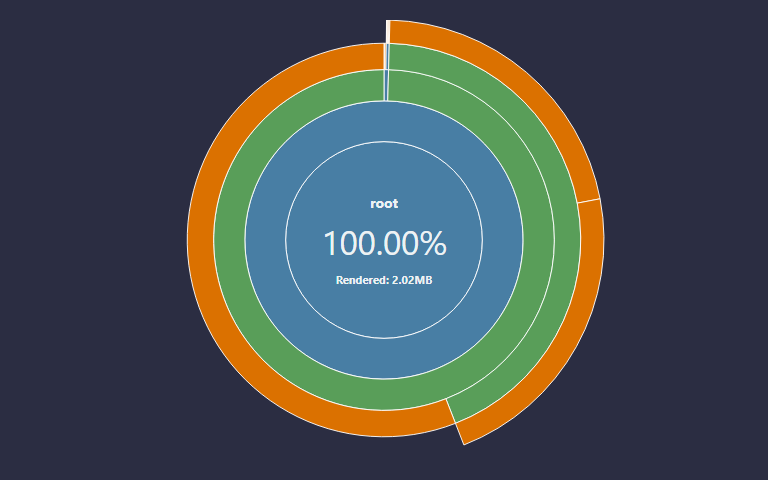
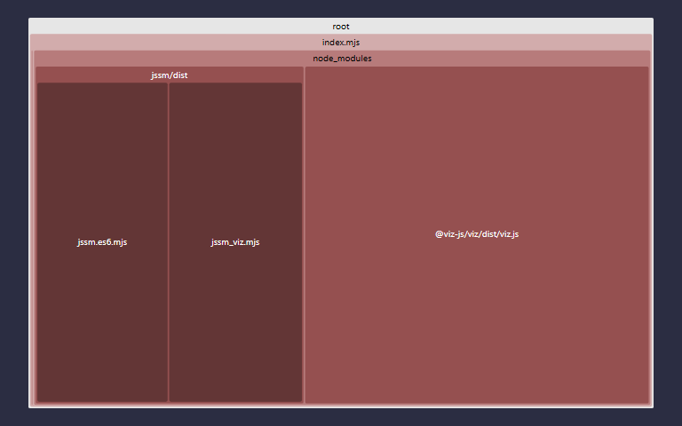
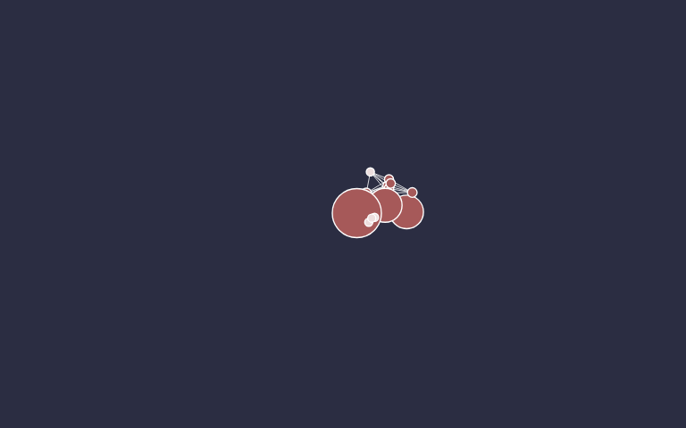
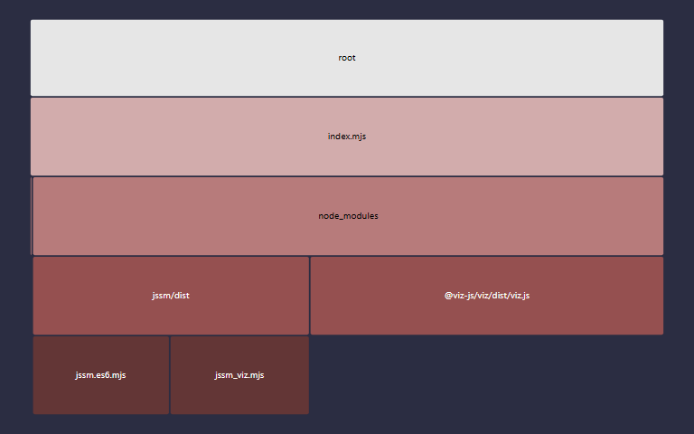

fsl-mcp
fsl-mcp v0.1.0
Version 0.1.0 was built on Tuesday, July 7, 2026 at GMT-07:00
1783487778022from hashefed8a5.
fsl-mcp is an MCP (Model Context Protocol) stdio server that lets an AI agent author FSL finite-state machines — giving the model the same structured feedback the FSL editor gives a human (parse diagnostics, a rendered diagram, a plain-English explanation, a step-by-step simulation, and style lint notes) instead of leaving it to guess whether the FSL it just wrote is even valid. It wraps jssm, the reference FSL implementation, and exposes five tools over stdio via the official @modelcontextprotocol/sdk.
Install / run
fsl-mcp ships as a standalone package and runs with no local install:
npx fsl-mcp
Point any MCP-speaking client at it with a stdio server entry:
{
"mcpServers": {
"fsl": { "command": "npx", "args": ["fsl-mcp"] }
}
}
The five tools
Every tool takes FSL source (a string) and returns structured JSON — never a thrown error for bad FSL, always diagnostics.
| Tool | Input | Returns |
|---|---|---|
fsl_validate |
source |
{ valid, diagnostics: [{severity, message, line, col}] } |
fsl_render |
source, format?: "svg" | "png" |
an SVG diagram (format:"png" degrades to svg + a note in v1), or diagnostics if invalid |
fsl_explain |
source |
{ states, transitions, start, terminals, summary }, or diagnostics if invalid |
fsl_simulate |
source, actions: string[] |
{ endState, path, legalNext, rejected? }, or diagnostics if invalid |
fsl_lint |
source |
{ notes: [{rule, message, line}] } |
Under the hood, every tool runs the same non-throwing analyze() pass first and short-circuits to diagnostics on a compile error, so a model can always find out why its FSL didn't work instead of getting an exception.
Ceilings (v1)
- Rendering is SVG-only.
format:"png"is accepted but returns the SVG plus anoteexplaining that rasterization isn't shipped yet — there's no bundled rasterizer in v1. - Simulation matches
fsl_simulate'sactionsagainst edge action labels first, then falls back to target-state names. Machines whose edges carry no action labels will report an emptylegalNexteven where target-state transitions are legal — this is a labeling ceiling, not a bug in the walk itself.
Test status
| Count | Statement | Branch | Func | Line | |
|---|---|---|---|---|---|
| Unit | 67 | 94.73% | 88% | 91.3% | 95.16% |
| Stochastic | 5 | 94.73% | 4% | 4.16% | 10.76% |
| Docblock count | 33% | |
|---|---|---|
| Docblock coverage | 62 | 33% |

 |
 |
 |
 |
License
MIT